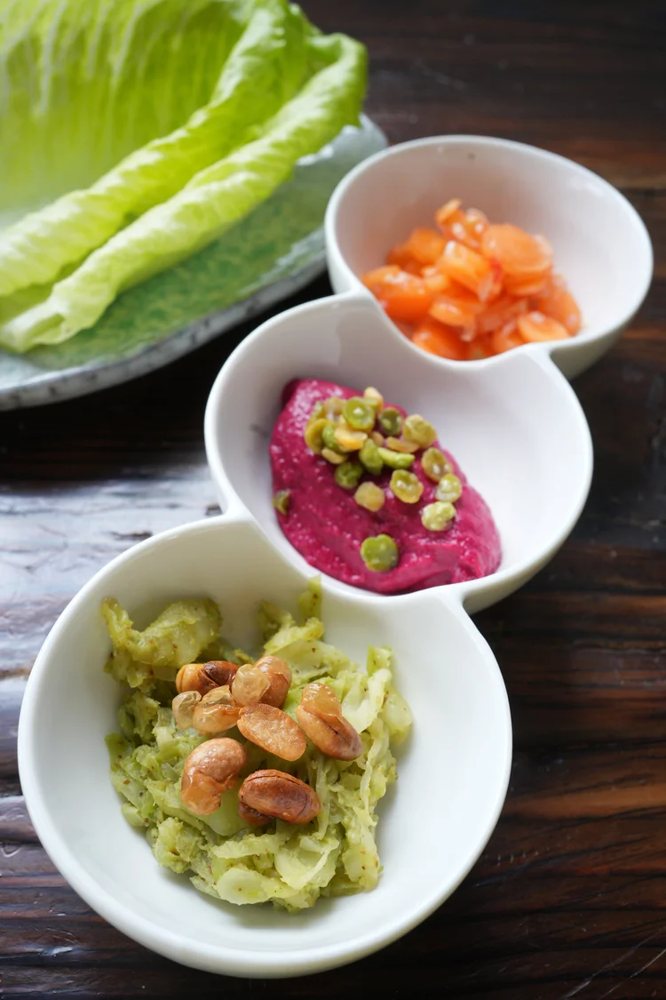
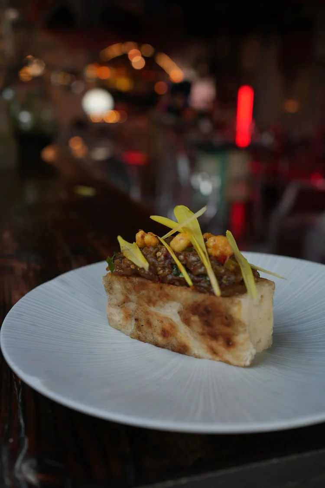
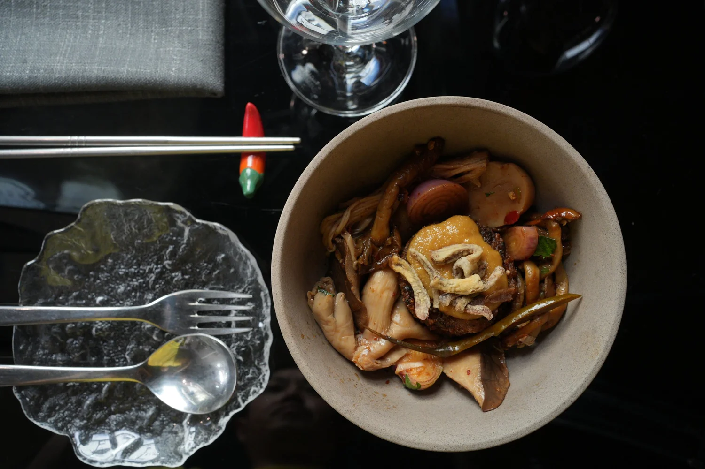
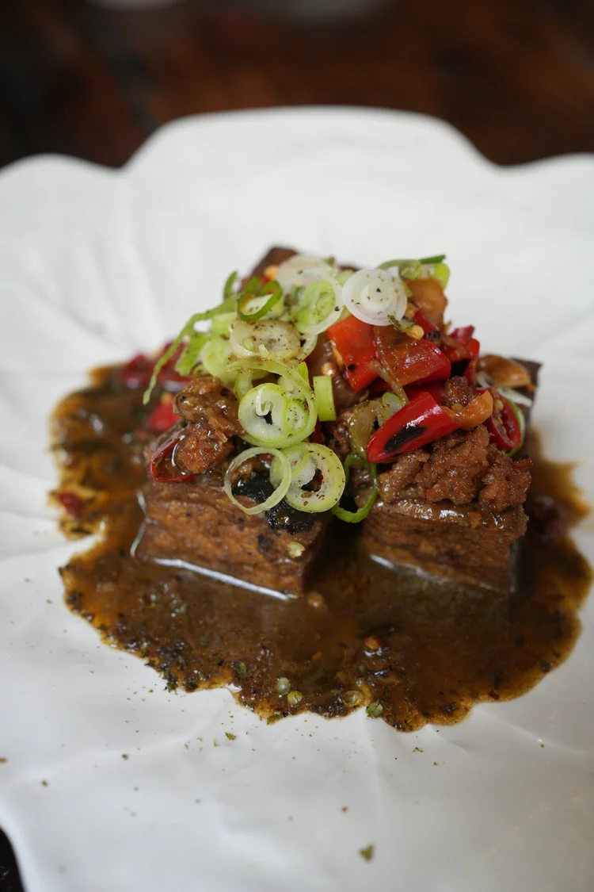
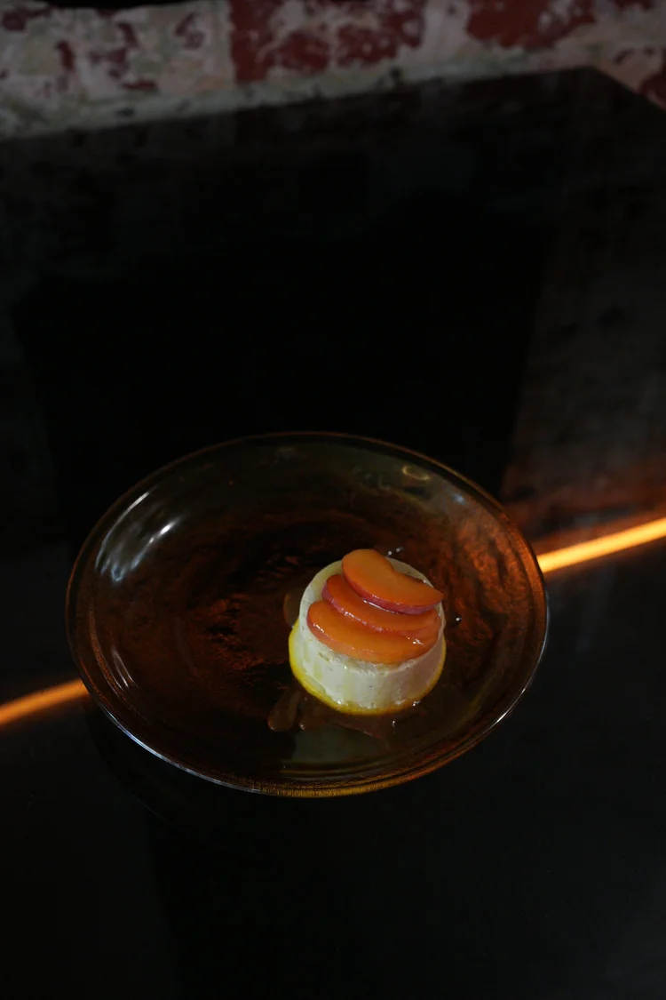

Chef's Pick:
5-Course Vegan
We're passionate about reimagining the bold, vibrant flavours of Sichuan cuisine through a contemporary, 100% plant-based. As a modern Sichuan restaurant in Melbourne, we bring together the depth of authentic Sichuan cuisine with innovative vegan cooking. While our signature 10-course degustation showcases an immersive tasting journey, our 5 course chef's choice set menu gives you a casual dining pace which takes you to explore the home style dishes. We crafted this menu for food enthusiasts who are eager to savour the bold flavours and creativity of modern Sichuan cuisine, all without the need for a formal set-course meal. From delightful shareable snacks and small plates to hearty chef-prepared mains and colourful plant-based dishes, each item showcases our dedication to using fresh, seasonal ingredients and skilled techniques inspired by authentic Sichuan

Grilled exotic muchrooms, all day simmered kelp veggie broth over freshly made matcha noodles

Crispy fried Chinese donut autumn salad, Sichuan style pickles

Slow roasted eggplant in Pixian chilli bean paste, topped with plant mince & pineapple

Hand rolled tofu skin stuffed w. shitake pulled meat, creamy mash, toasted tamari macdamia
